Flutter
FastAPI
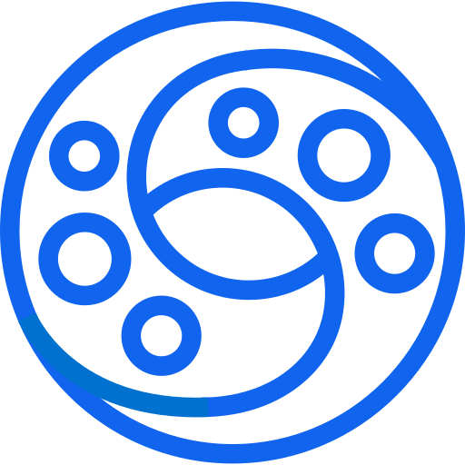
KrakenDScan a receipt and Reclaima handles the rest — per-item extraction, deadline tracking, and a ready-to-submit claim PDF when something goes wrong.

KrakenDMost people have no idea when their warranties expire. Receipts get lost, warranty cards go unfiled, and return windows close before anyone notices. When something breaks, the process of finding proof of purchase, identifying warranty coverage, and drafting a claim is manual, scattered, and frustrating enough that most people don't bother.
The tools that exist today solve half the problem at best. Business expense apps have strong OCR but treat receipts purely as financial records — no warranty tracking, no return window, no claim support. Dedicated warranty trackers let you log products and set reminders, but rely on manual entry, treat each receipt as a single item, and stop at the notification. None of them generate anything you can actually submit to a retailer or manufacturer.
No consumer app handles the complete lifecycle: scan a receipt, track every item on it, get reminded before deadlines, and produce a claim document when something goes wrong.
Reclaima covers the full purchase-to-claim lifecycle in one place.
Receipts are scanned using AWS Textract with a Claude Haiku cleanup layer that handles noisy, locally formatted receipts — including bilingual layouts. Every line item is extracted individually, so a single receipt with five products creates five independently tracked entries, each with its own warranty period, return window, and reminder schedule.
When a product fails, Reclaima generates a structured PDF warranty claim document — with purchase details, issue description, and defect photos attached — ready to submit directly to a retailer or manufacturer. No competitor in the consumer space does this.
Snap a photo, pick from gallery, or upload a PDF. Front and back both sides supported. Up to 20 MB per upload.
AWS Textract reads every line. Claude Haiku fixes OCR noise — garbled names, transposed digits, broken totals.
Each line item gets its own warranty and return countdown with configurable FCM push reminders.
One tap generates a claim-ready PDF with purchase details, defect photos, and retailer contact.
From photographing a receipt to filing a warranty claim — Reclaima covers every step at the per-item level.
Dual-layer extraction using AWS Textract AnalyzeExpense for raw structured data and Claude Haiku for intelligent cleanup, normalization, and field inference across six specialised extraction passes.
AWS Textract · Claude HaikuNot just totals — every line item becomes a tracked product with its own expiry dates, category, and product code. If a line item has quantity greater than one, Reclaima creates that many individual records, each independently tracked with its own warranty period, return window, and reminder schedule.
Per-unit tracking · ItemizationWarranty and return windows shown as live day countdowns, color-coded by urgency: green → amber → red as deadlines close.
Per-item urgencyEvery receipt, line item and claim is stored in Drift/SQLite and synced to the backend when online. Warranty data remains fully accessible without an internet connection.
Drift · SQLiteAPScheduler fires background jobs that push FCM notifications before warranty and return windows close. Each product has independent lead day overrides for warranty and return reminders, individual enable/disable toggles, and tapping a notification deep links directly to that specific product screen.
FCM · APScheduler · Deep linksGenerates a structured, print-ready A4 PDF containing purchase details, warranty dates, store contact information, and full receipt images. Up to 10 defect photos can be attached — each included as a full page — making the document ready to submit directly to a retailer or manufacturer.
ReportLabBoth front and back receipt images are processed separately through the OCR pipeline. Results are merged — front image provides header fields (store, date, total), line items from both sides are combined into a single structured output. Both images are included in the generated claim PDF.
Front & back · OCR mergeEvery warranty claim has a full status lifecycle: DRAFT → SUBMITTED → IN_PROGRESS → RESOLVED / DENIED. On resolution, three outcomes are supported — REFUNDED (item archived), REPAIRED (item stays active, user prompted to update warranty dates), REPLACED (original archived, replacement item created and linked). Replacement chains are tracked via linked records.
DRAFT → RESOLVEDAfter OCR processing, Reclaima automatically fetches a product image for each line item via Brave Image Search, ranked by domain trust — preferring official brand and retailer sources over marketplaces and aggregators. Images are stored and displayed on the product detail screen.
Brave SearchReal screenshots from the app — from scanning a receipt to generating a claim PDF.
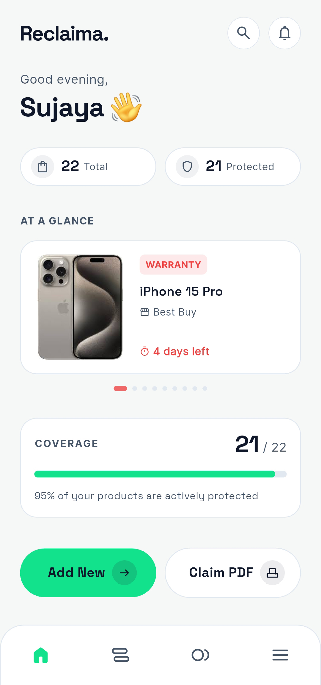
Dashboard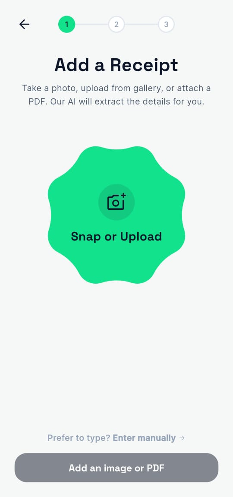
Add a Receipt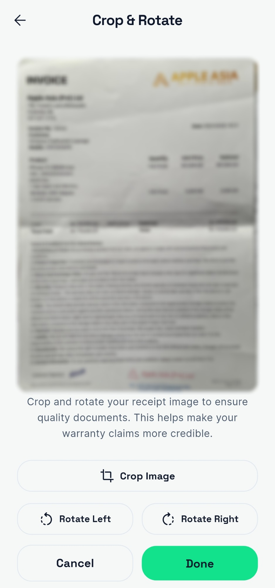
Crop & Rotate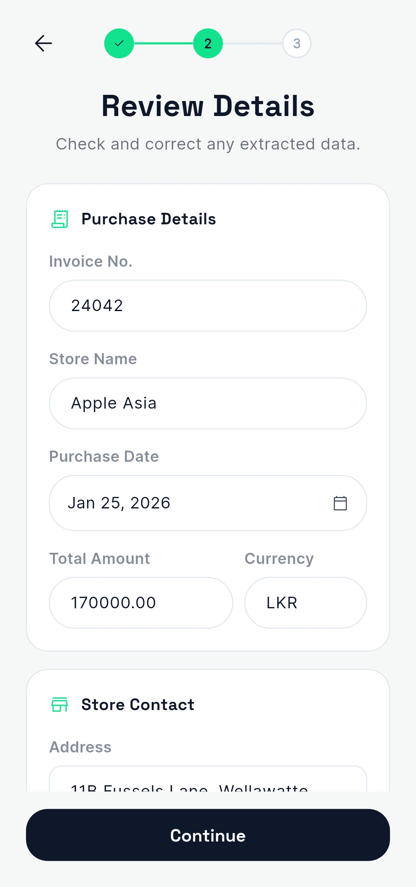
Review Details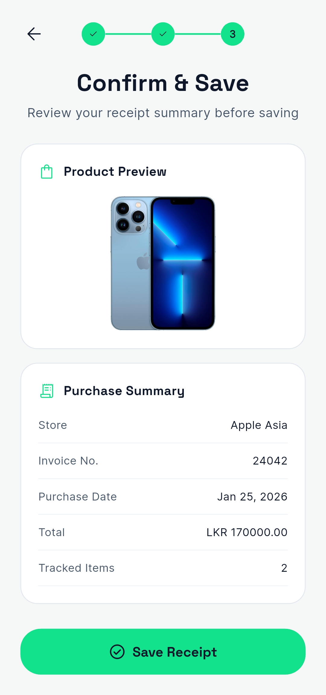
Confirm & Save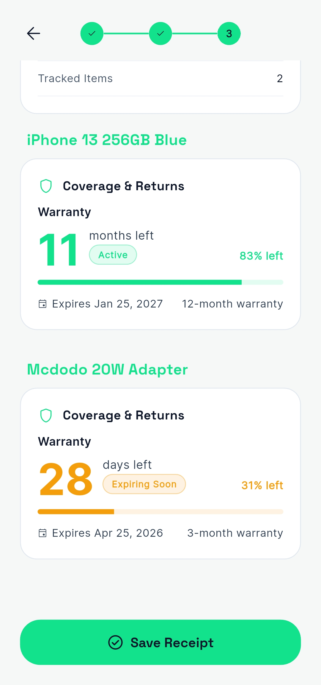
Per-item Coverage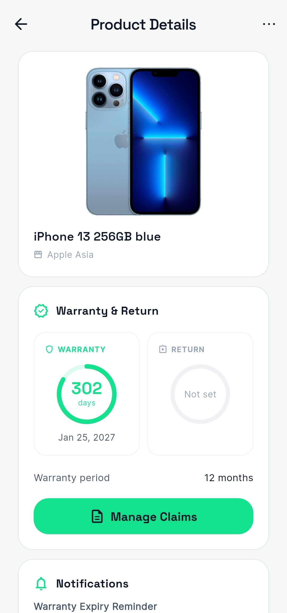
Product Details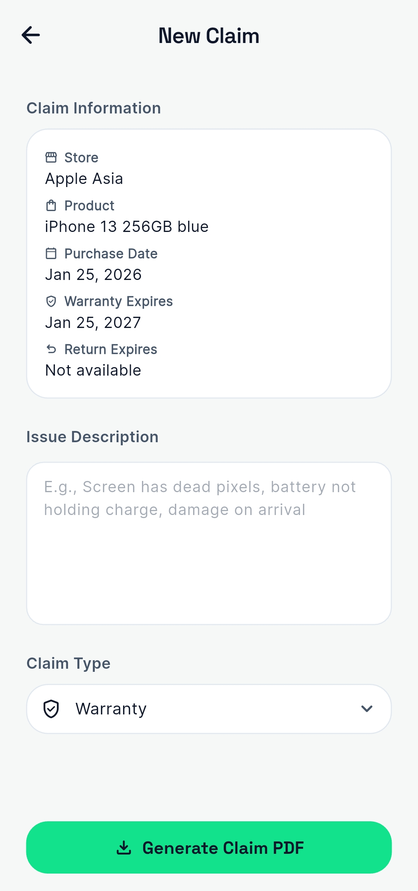
New Claim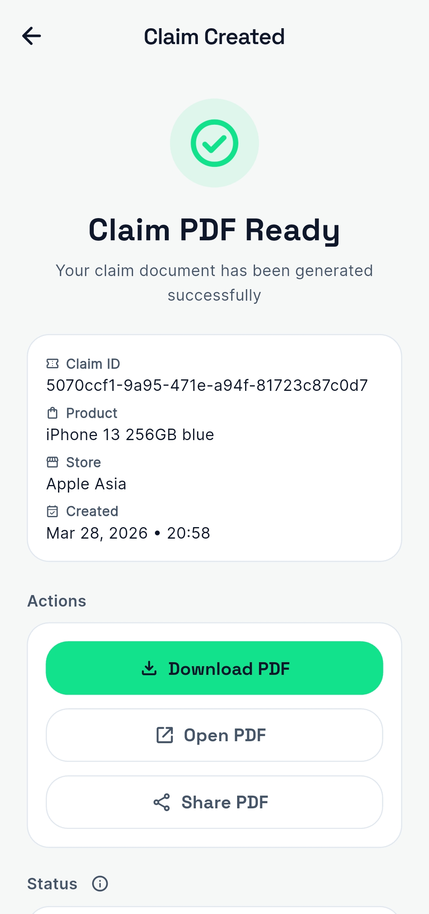
Claim PDF Ready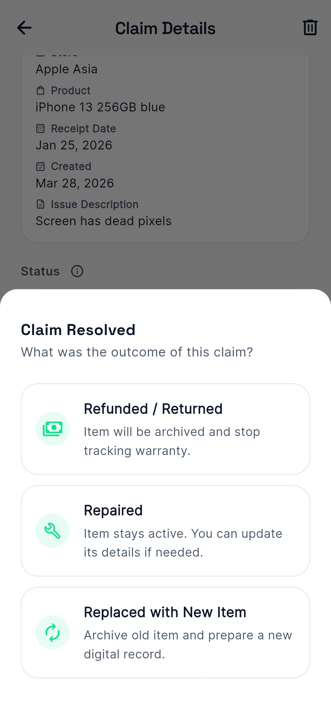
Resolve ClaimModular monolith designed for microservices extraction. Mobile app and backend are independently deployable; all cloud services sit behind service interfaces.
Python 3.11 · deployed as a Dockerised FastAPI service on OCI Compute
Flutter 3 · cross-platform iOS & Android · offline-first with local SQLite
Typically under ~10s — varies by image size, PDF complexity, and network latency.
# Stateless — no DB write. Caller decides to persist. @router.post("/ocr-extract", response_model=OcrExtractResponse) async def ocr_extract( front_image: Optional[UploadFile] = File(None), back_image: Optional[UploadFile] = File(None), current_user: dict = Depends(get_current_user), db: Session = Depends(get_db), ): # 1 · Upload front + optional back image to S3 front_key = s3_svc.upload_file(front_image) back_key = s3_svc.upload_file(back_image) if back_image else None # 2 · Textract AnalyzeExpense — six LLM cleanup passes # run synchronously inside analyze_document() data = textract_svc.analyze_document(front_key) return OcrExtractResponse(...)
{
"s3ObjectKey": "users/uid/receipts/abc/front.jpg",
"ocrStatus": "success",
"storeName": "Best Buy",
"invoiceNumber": "BBY-20240312-8841",
"purchaseDate": "2024-03-12T00:00:00",
"currency": "USD",
"totalAmount": 349.99,
"lineItems": [
{
"rowIndex": 0,
"itemDescription": "Sony WH-1000XM5",
"quantity": 1,
"unitPrice": 349.99,
"productCategory": "Electronics"
}
]
}
# Six methods — each formats its own prompt and calls Bedrock directly. # Prompt constants live in app/core/prompts.py. def clean_store_name(self, text: str) -> str: prompt = STORE_NAME_PROMPT.format(text=text.strip()) raw = self._client.invoke_model( modelId=self._model_id, # "us.anthropic.claude-haiku-4-5-20251001-v1:0" body=json.dumps({"anthropic_version": "bedrock-2023-05-31", "max_tokens": 50, "temperature": 0.1, "messages": [{"role": "user", "content": prompt}]}), contentType="application/json", accept="application/json", ) return json.loads(raw["body"].read())["content"][0]["text"].strip() # extract_product_name() → PRODUCT_NAME_PROMPT (max_tokens=100) # clean_receipt_notes() → CLEANUP_PROMPT (max_tokens=512) # clean_phone_number() → PHONE_NUMBER_PROMPT (max_tokens=50) # clean_email() → EMAIL_PROMPT (max_tokens=50) # clean_address() → ADDRESS_PROMPT (max_tokens=150)
All routes under /api/v1
— Firebase JWT verified on every authenticated request via Firebase Admin SDK.
| Method | Endpoint | Description |
|---|---|---|
| POST | /auth/register | Register or retrieve an existing user after Firebase authentication (idempotent) |
| GET | /auth/me | Return authenticated user profile |
| POST | /receipts/ocr-extract | Upload image/PDF → S3 → Textract → Claude Haiku → structured JSON. Stateless — no DB write. |
| POST | /receipts | Create a receipt record from OCR-reviewed data |
| GET | /receipts/{id}/image-url | Return a pre-signed S3 URL for the receipt image |
| GET | /warranties | List all warranty records with expiry countdowns |
| GET | /warranties/returns | List return deadlines with day countdowns — separate from warranty tracking |
| POST | /claims | Initiate a warranty or return claim; accepts defect images via multipart |
| POST | /claims/{id}/resolve | Resolve a claim — records outcome (refunded / repaired / replaced) and optionally links a replacement line item |
| POST | /claims/{id}/pdf-access | Return a pre-signed S3 URL for the stored claim PDF; regenerates via ReportLab only if the file is missing from S3 |
| POST | /products/image-search | Brave Search API proxy — returns product image URL for a query string |
| PATCH | /notifications/fcm-token | Register or clear a device FCM token for push notification delivery |
| GET | /health | Liveness probe — OCI health checks and CI gate |
Selected endpoints only — the full API spans 29 endpoints across 6 resource domains.
Six GitHub Actions jobs gate every push to main
— the backend ships only when all pass.
The reasoning behind the choices that shaped Reclaima — gateway, scheduler, hosting, secrets, OCR pipeline, framework, and the CI/CD checks that gate every deploy.
.env file on the server means they sit on disk permanently, get
included in VM snapshots, and require manual SSH access to rotate. AWS Secrets Manager solves the disk
problem but charges per secret per month plus per API call — costs that add up quickly when secrets are
fetched on every container restart. HashiCorp Vault is powerful but moved from open-source to a
source-available licence in 2023, requires running your own server or paying for a managed plan, and has
significant engineering overhead to configure workflows and integrations from scratch. Infisical is
MIT-licensed, self-hostable, and has a free cloud tier that covers unlimited secrets, environments,
machine identity auth, GitHub Actions integration, and a CLI — everything this stack needs at no cost. In
practice, the deploy script fetches database credentials from Infisical before containers start, and the
application fetches the remaining secrets at startup. No credentials are written to the server filesystem
at any point.
.github/workflows directory that sees the full picture and can run backend and mobile
checks in parallel. With polyrepo, you'd be managing separate issue trackers, separate branch
protection rules, and the mental overhead of keeping related changes in sync across repos.
/docs
endpoint is always accurate with no extra configuration. Pydantic v2 handles request validation,
serialization, and settings management consistently across the entire codebase. Native async
support matters for non-blocking calls to Textract and Bedrock. Flask requires assembling
extensions for every piece of functionality; Django REST Framework is opinionated around Django's
ORM, which conflicts with the SQLAlchemy and Alembic setup. FastAPI gives the right defaults
without forcing a framework's assumptions onto the data layer.
AnalyzeExpense API is purpose-built for receipts — it returns vendor name,
total, individual line items, dates, and tax as structured fields without needing a custom model or
training data. Google Document AI and Azure AI Document Intelligence both offer custom model
training, which is their primary advantage, but that requires labelled training data and ongoing
maintenance that's unnecessary when a prebuilt expense model already covers the use case. The
entire stack is also already on AWS, so Textract integrates directly with S3 and Bedrock without
cross-cloud authentication or egress costs. Where Textract falls short is bilingual receipts and
multi-column layouts where text gets garbled or fields get transposed. Claude Haiku on Bedrock
handles that with six targeted cleanup passes — store name, product names, warranty notes, phone,
email, address — each with its own prompt. Using only an LLM would be slower and more expensive for
structured extraction; using only Textract leaves the cleanup problem unsolved.
krakend.tmpl uses flexible config template syntax — a typo or invalid endpoint
configuration doesn't produce a compile error, it produces a gateway that fails to start at deploy
time. krakend check run against the official KrakenD Docker image catches syntax
errors, invalid route configs, and missing required fields before the config reaches production.
Without this check, a misconfigured gateway would pass all CI jobs, deploy successfully, and then
silently fail to start — taking down the entire API with no code error to point to.
GITHUB_TOKEN, which is automatically available in every
GitHub Actions run — no separate registry credentials to create, rotate, or store as secrets.
Images are stored in the same GitHub organisation as the code, so access control is unified with
repository permissions. Docker Hub's free tier rate-limits unauthenticated pulls, which causes
intermittent CI failures when pulling base images during builds. Keeping the built image in GHCR
means the full pipeline — source code, CI config, and built images — lives in one place with one
access model.
--platform linux/arm64,linux/amd64.
/api/v1/health twenty times at three-second intervals after the
new containers start, giving Infisical time to fetch secrets and the database time to accept
connections. If the health check doesn't pass within that window, oci_deploy.sh
automatically rolls back to the previous image tag and reverts the Alembic migration. Production
is restored without manual intervention, and the failed deploy leaves a clear signal in the CI
logs.